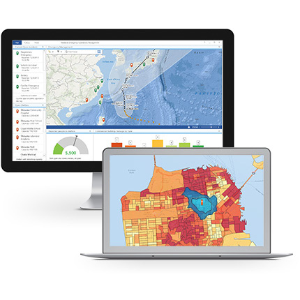

Essentially, the platforms are "connected things" that report they status, receive commands, and periodically or on demand transfer the collected data to the mission controll center.

Mission Control
|
Long-range missions require satellite communication using Iridium short burst data (SBD) communication service with global coverage. Close to shores, where cellular data services are available, they could be used instead of more expensive satellite communication to controll the USVs and "unload" the collected data. |
Data Processing
|  |
Data collected by the USVs are transfered to the data storage services. The stored data are automatically processed and converted to the requested data formats and made available for download or as ready-to-use online maps in ArcGIS Online. |